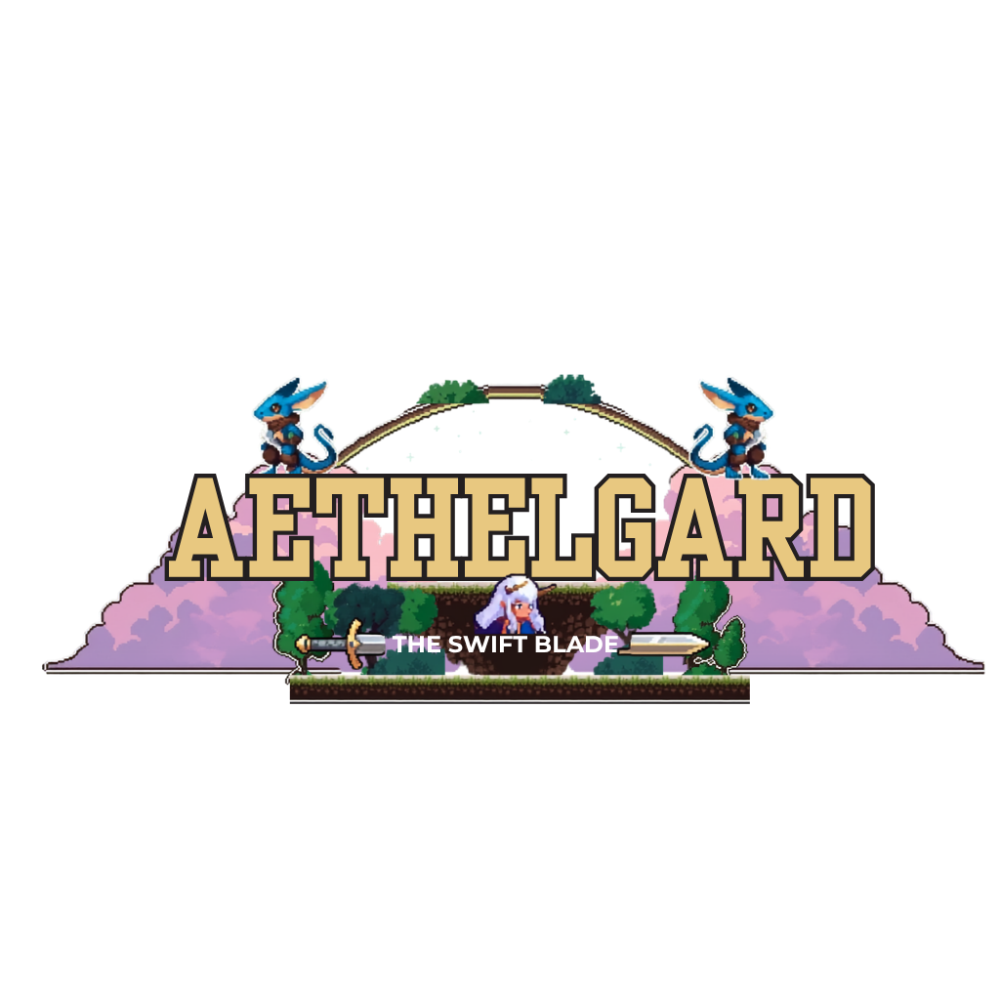
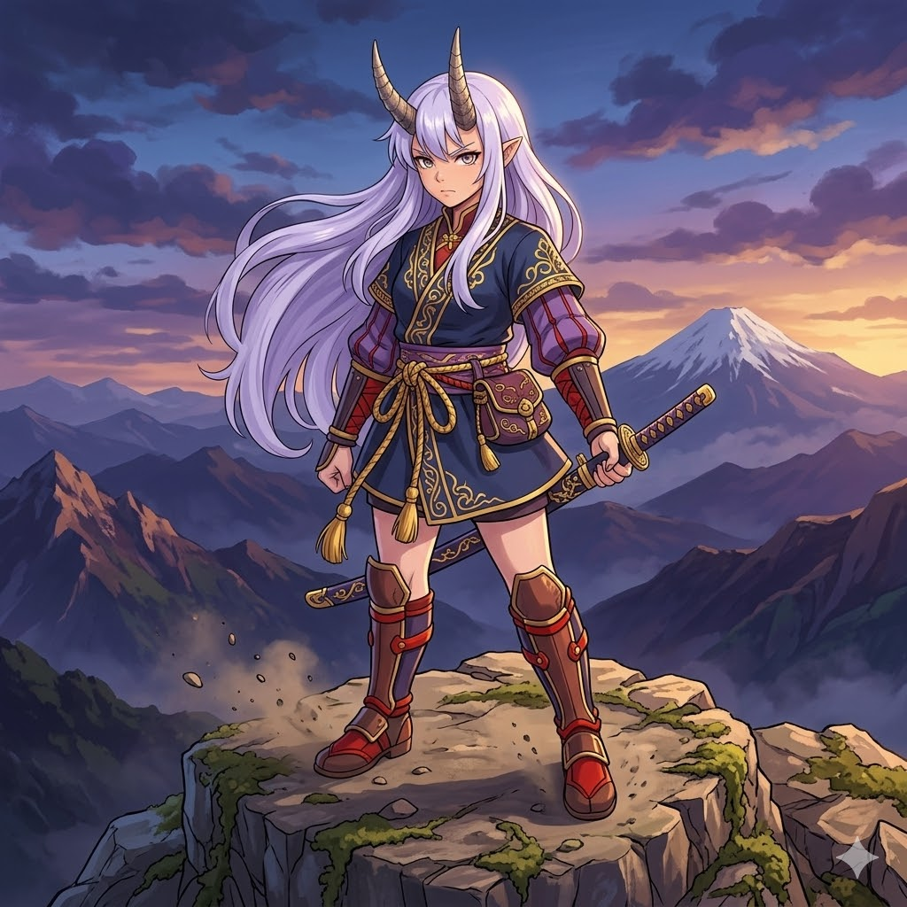
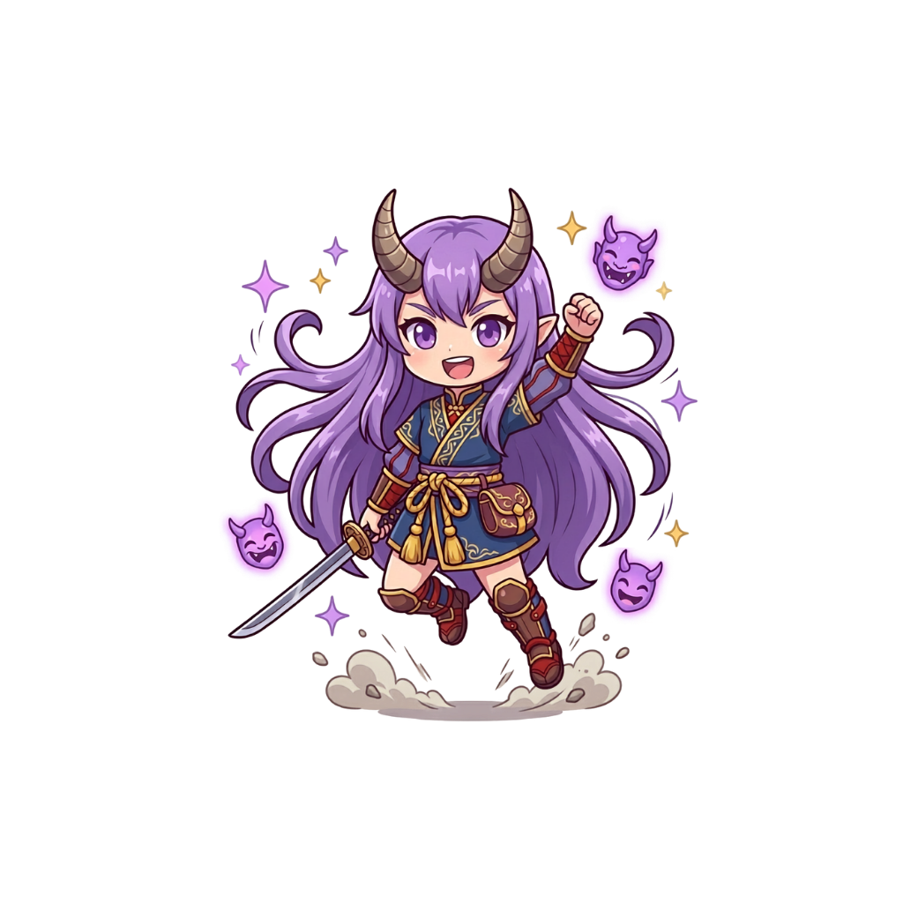
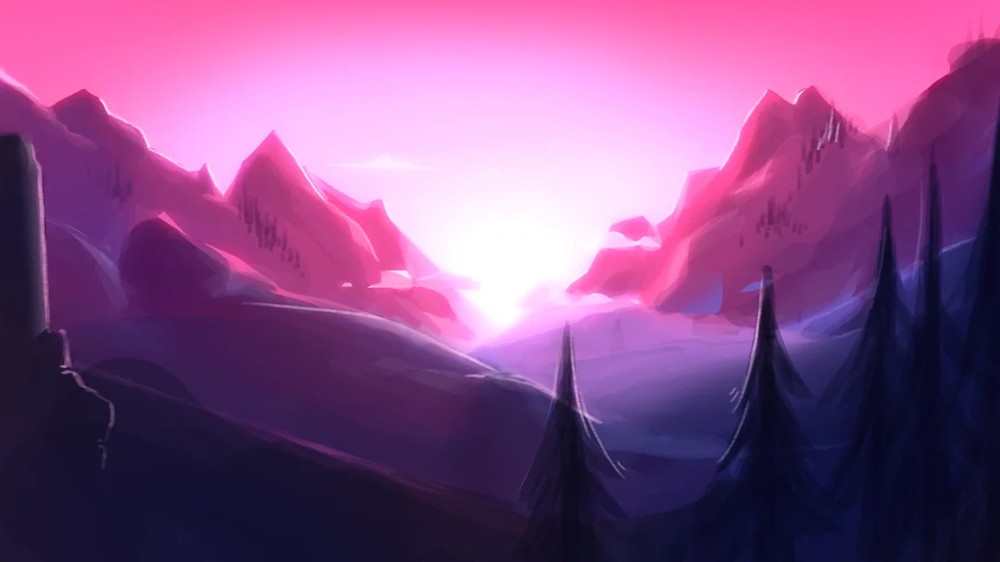

Chiến đấu tốc độ
Lướt qua kẻ địch, né đòn và tung combo dứt khoát trong những pha xử lý ngắn mà đã tay.

Aethelgard The Swift Blade Tải gameMột chuyến phiêu lưu pixel 2D đầy tốc độ: băng qua rừng cổ, né bẫy, đối đầu quái vật và khám phá những tàn tích đang ngủ quên sau làn mây Aethelgard.
Aethelgard.exe


Aethelgard được thiết kế để người chơi vào game nhanh, điều khiển mượt và luôn có mục tiêu mới để vượt qua trong từng màn.
Lướt qua kẻ địch, né đòn và tung combo dứt khoát trong những pha xử lý ngắn mà đã tay.
Băng qua những vùng đất phủ mây, hang tối và tàn tích cổ được dựng bằng phong cách pixel fantasy.
Điều khiển gọn, phản hồi nhanh, phù hợp để chơi thử ngay mà không cần launcher phức tạp.
Tải file ZIP, giải nén và mở game. Không đăng nhập, không cài thêm bước rườm rà.

Khi những cánh rừng bắt đầu thức giấc, Swift Blade phải tiến sâu vào Aethelgard để tìm lại dấu vết của sức mạnh cổ xưa. Mỗi bước đi là một thử thách mới: địa hình hiểm, bẫy bất ngờ và những kẻ canh giữ không dễ bị khuất phục.
Nhận bản game dưới dạng file ZIP. Tải xong chỉ cần giải nén, mở thư mục game và bắt đầu hành trình của Swift Blade.
Nhấn nút tải và chờ trình duyệt lưu file về máy.
Chuột phải vào file ZIP, chọn giải nén vào thư mục bạn muốn.
Vào thư mục vừa giải nén, chạy file game và bắt đầu chơi.